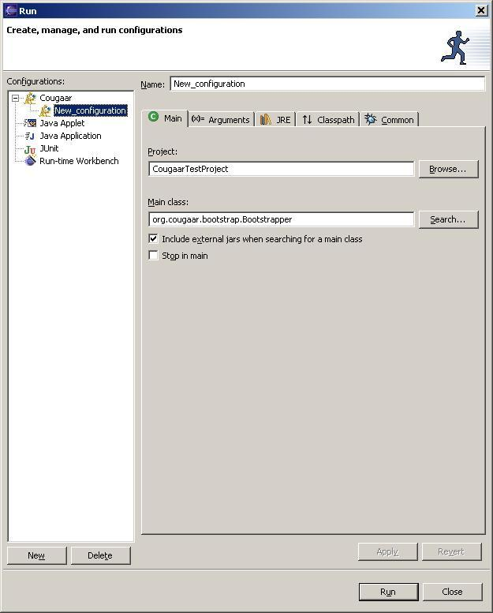
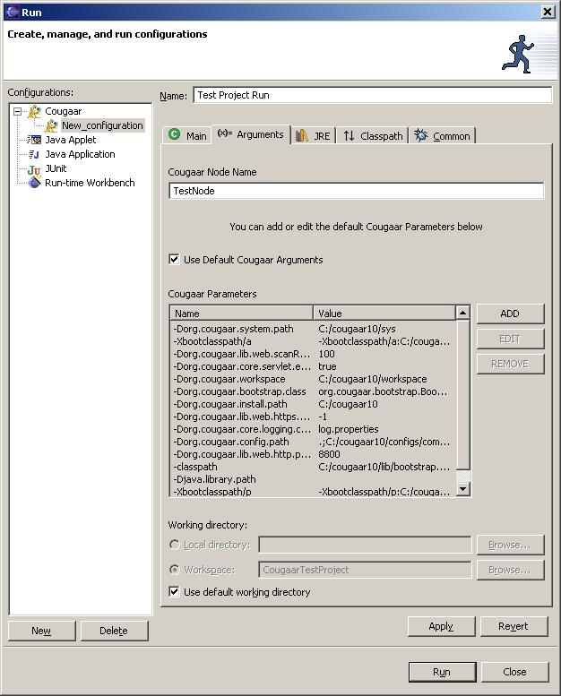

CougaarIDE Use:
Running a Cougaar Project
Highlight the project you want to run (Must be a
Cougaar
Project).
Then select the Run menu, and select "Run...". Then double Click the
Cougaar icon in the
Tree view to create a new Launch Configuration.

Enter a name for the run configuration (e.g Test Project Run), then
click on the "Arguments" tab.

The arguments Tab is pre-populated with Cougaar
parameters. Items with
COUGAAR_INSTALL_PATH
will be converted to the projects Cougaar install path at runtime. You must type in the name of the Cougaar node
you want to execute and click ok. If you
do not want to use the default Cougaar arguments, you can deselect the
checkbox
for using the default arguments.
Parameters can be added, edited, or removed.
If you reselect the default arguments
checkbox, changes will be lost. You can
also select the default working directory, if the base directory does
not have
your Cougaar configuration files, you must either change the working
directory
to the configs directory, or add the configs directory to your org.cougaar.config.path
parameter setting.
When you are finished with these
tabs you can click Apply to
save the settings and then Run to execute the Cougaar project. Output will be shown in the console
window. You can use the same Launch
configuration to debug the Cougaar project as well.